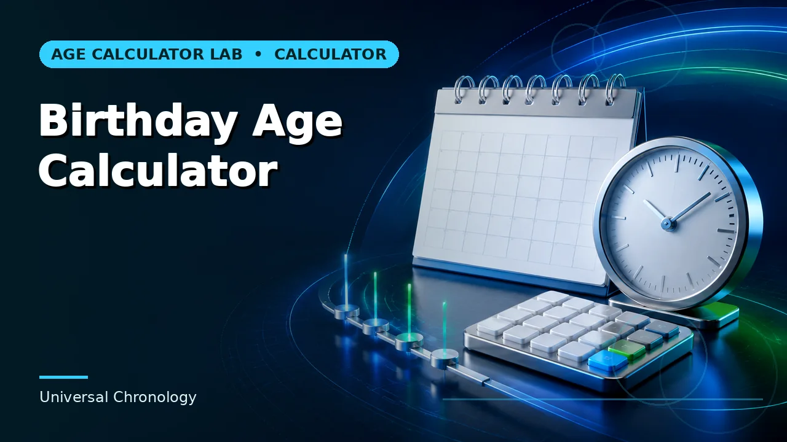

Quick answer
Add the target age in calendar years. Adding 365 days per year drifts by about a day every four years, which over fifty years is nearly a fortnight.
Years are the unit
Turning 50 happens on the calendar anniversary that completes fifty years. That is a date-arithmetic operation: keep the month and day, advance the year by fifty. It is not a duration measured in days.
The distinction matters because the shortcut is tempting and its error compounds. Fifty years of 365 days is 18,250 days; the real interval is about 18,262, because roughly twelve leap days fall inside it. A date twelve days early is the wrong date for something people put in a calendar years ahead.
Use this guide with the right tool: Open the Milestone Birthday Calculator for the date of a custom milestone birthday. If the question shifts, compare it with the Birthday Age Calculator or the Next Birthday Calculator.
Turning versus being
'Turning 50' names a single date. 'Being 50' describes a year-long state that begins on that date. Invitations, eligibility rules and reminiscences often blur them, and it matters whenever a deadline falls inside that year.
For planning, you want the date. For checking a rule, you want the completed age on the date the rule applies. Keep them as two separate values rather than one figure asked to do both jobs.
Leap-day birthdays
For a 29 February birth date, a milestone birthday in a non-leap year needs a stated convention: 28 February or 1 March. For a celebration, whichever the family prefers. For anything with legal or contractual weight, find the governing rule, which will specify one.
Note that a leapling turning 40 in 2036 gets an actual 29 February, since 2036 is a leap year. It is worth checking whether a given milestone happens to land on a real leap day — it makes for a better occasion and removes the question.
Weekday and lead time
The weekday of a milestone birthday is easy to overlook and is usually the first practical constraint. Birthdays advance one weekday most years and two across a leap day, so a birthday's weekday twenty years out is not something anyone can work out mentally.
For anything requiring venues, travel or time off, knowing the weekday a year or two ahead is the difference between planning and reacting. The calculator reports it alongside the date for exactly that reason.
Worked example
Substitute your own dates and follow the instructions that actually govern your situation. Where a result sits close to a cutoff, verify the underlying date and rule independently before relying on it.
Common mistakes to avoid
- Adding 365 days per year. Drifts by about a day every four years. Add calendar years instead.
- Confusing the date of turning an age with the year of being it. One is a date, the other is a year-long state. Which you need depends on the question.
- Leaving the leap-day convention unstated. 28 February and 1 March both appear. Record which you used.
Use the right calculator
Each of these runs in the browser, states its assumptions, and links to the neighbouring calculation when the question turns out to be a different one.



Frequently asked questions
Which ages count as milestones?
Conventionally the decades, but five-year intervals are common too. It is a choice about how often to mark them, not a rule.
How far ahead can I plan?
The date arithmetic is exact at any distance. Venues and circumstances are the limiting factor, not the calculation.
Does the calculator show the weekday?
Yes, alongside the date — it is usually the first practical constraint on planning.